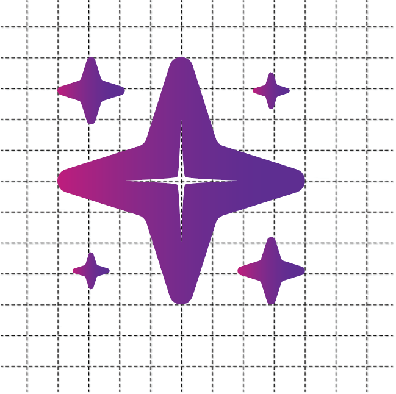

Diseño Web
Parcial 2
SEO

El SEO (Search Engine Optimization) es el conjunto de técnicas para optimizar una página web y mejorar su visibilidad en los motores de búsqueda como Google, aumentando así el tráfico orgánico.
Prototipado de baja fidelidad
Ver presentación en CanvaPrototipado de alta fidelidad

El prototipado de alta fidelidad es la creación de un prototipo interactivo que se asemeja mucho al producto final, incluyendo colores, tipografía e interacciones detalladas.
Tablas en HTML

Las tablas en HTML se usan para mostrar información organizada en filas y columnas, como hojas de cálculo o listas comparativas, utilizando elementos como ``, `
` y ``.Logotipo reticulado
Logotipo IOS

Maneras de poner color en CSS
Hexadecimales
Un código de 6 dígitos que indica la cantidad de Rojo, Verde y Azul (RGB). Se escribe con un `#` al inicio.
Keywords
Palabras clave que representan colores predefinidos (ej. `red`, `blue`, `white`).
RGB
Red, Green y Blue. Se usan valores numéricos de 0 a 255 para cada color primario (ej. `rgb(0, 255, 150)`).
RGBA
RGB con un valor extra (Alpha) para controlar la transparencia (opacidad) del color (ej. `rgba(..., 0.5)`).
HSL
Hue (Tono), Saturation (Saturación) y Lightness (Luminosidad). Es útil para crear variaciones de color.
HSLa
HSL con un valor extra (Alpha) para controlar la transparencia (opacidad) del color.